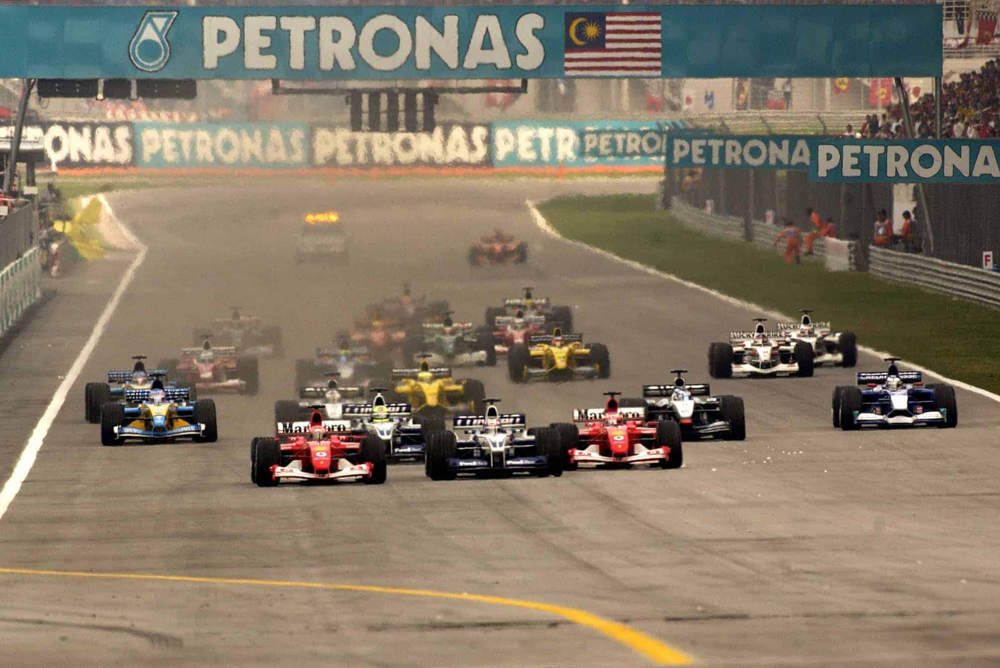
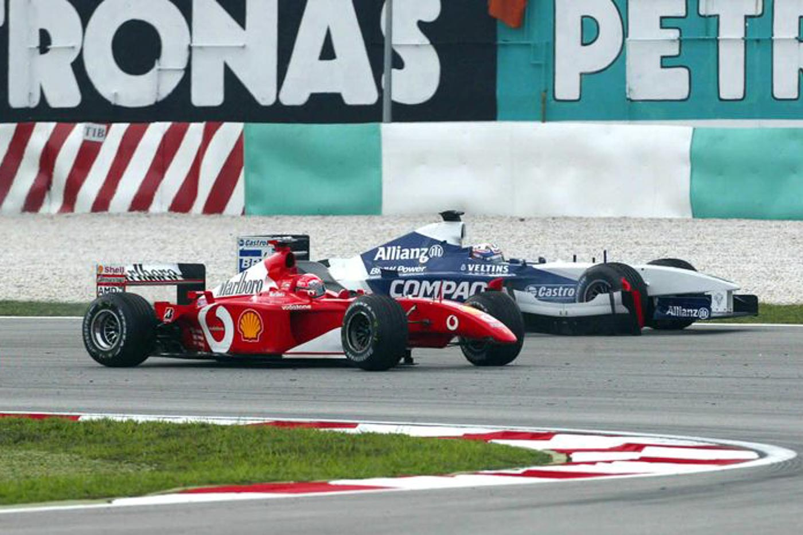

O OUTRO SCHUMACHER

Dessa vez os irmãos inverteram as posições: Michael bateu na largada e Ralf venceu:
Em sua estrutura básica, o Grande Prêmio da Malásia foi a repetição do que já havia sido observado na prova australiana. Tal qual a disputa de abertura da temporada 2002, a segunda etapa do Campeonato Mundial de Pilotos e Construtores de Fórmula 1, realizada no circuito malaio de Sepang, também teve um Schumacher (Michael) batendo na largada com um piloto sul-americano (Juan Pablo Montoya) e outro vencendo (Ralf). Só que dessa vez a violência do acidente foi infinitamente menor do que a verificada em Melbourne e Michael Schumacher reafirmou a sua condição de principal astro da Fórmula 1 atual. Para quem acredita, pode-se dizer que o alemão é um sortudo incorrigível. Não só o acidente da largada não o tirou da corrida, como também adotou um ritmo agressivo para recuperar-se e terminar em 3º lugar, ajudado pelos problemas com o Renault de Jenson Button. O resultado do pentacampeão reafirmou a sua condição de líder do campeonato e candidato ao quinto título. Ralf Schumacher obteve a quarta vitória na Fórmula 1 ao completar as 56 voltas do Grande Prêmio da Malásia em 1h34min12s912, com média horária de 197,680 km/h. A dobradinha da equipe Williams BMW foi sacramentada com a presença de Montoya na 2º colocação — coube ao colombiano também a melhor volta da corrida. Foi outro 1º e 2º da Michelin, cujos pneus representaram um diferencial de peso da Malásia. Sob temperaturas muito elevadas — no momento da largada, no domingo, os termômetros em Kuala Lumpur marcavam 34 graus —, os pneumáticos franceses permitiram um único pit para Ralf Schumacher, o que definitivamente garantiu o 1º lugar na classificação e o 3º posto na tábua de pontuação.

Mas se Williams, BMW, Michelin e Petrobras tinham muitos motivos para comemorar no pódio — em que pese o distanciamento visível entre os dois comandados de Frank Williams —, a equipe Sauber Petronas também comemorou muito. Depois da expectativa frustrada em Melboune, quando os dois carros de Peter Sauber ficaram no acidente da largada, em Sepang o alemão Nick Heifeld terminou em 5º e o brasileiro Felipe Massa, ratificando toda a impressão positiva que se tem a respeito de sua primeira temporada, garantiu o primeiro ponto ao concluir na 6º colocação o seu segundo Grande Prêmio, que pode ser considerado o primeiro em se tratando dos acontecimentos vividos na Austrália. Antes de Massa, apenas Emerson Fittipaldi e Ayrton Senna haviam marcado pontos na segunda participação oficial na Fórmula 1 (Fittipaldi o fez na Alemanha em 1970 e Senna na África do Sul em 1984). Massa está bem impressionado com a confiabilidade do chassi C21 da equipe sediada em Hinwil, na Suíça. Ele só lamentou que o carro estivesse com acesso de carga na asa traseira, o que lhe roubava cerca de 20 km/h de velocidade final no trecho mais rápido da pista, ponto em que Montoya “voava” a mais de 313 km/h. E o resultado passa a ser mais significativo ainda quando se sabe que o piloto teve vários problemas na classificação, conseguindo apenas a 14º colocação, em lugar do 9º posto em Melbourne.

O lance mais importante da prova aconteceu logo na largada, quando uma disputa entre Michael Schumacher, que conquistara a 44º pole position, e o 2º no grid, Juan Pablo Montoya, eliminou-os da briga pela vitória. Ao toque que envolveu os dois na freada da primeira curva, Rubens Barrichello assumiu a ponta, seguido por Ralf Schumacher. Enquanto isso, os dois protagonistas do acidente caíram para as últimas posições, com Schumacher em 21º e Montoya em 11º. Mesmo com a liderança do brasileiro, as melhores condições de Ralf Schumacher para vencer foram determinadas pela estratégia adotada pela equipe Williams. Se Barrichello havia largado com o planejamento para duas paradas nos boxes, o alemão da Williams sabia da necessidade de apenas uma parada para a troca de pneus e de reabastecimento do FW24. Nesse sentido, Barrichello liderou até a 21º volta, quando fez o primeiro pit e retornou na 3º colocação, com Ralf Schumacher em 1º. Barrichello retornaria à dianteira 10 voltas depois, momento em que o líder parou para o seu único pit. O brasileiro da Ferrari retornou em 2º depois da segunda parada, na volta 35, e ficava claro que só deixaria de conquistar o primeiro pódio do campeonato se ocorresse algum problema. E, de fato, o estouro do motor, na volta 40, acabou com suas chances.

Nesse momento da prova, Michael Schumacher fez a sua terceira parada e retornou em tempo de posicionar-se na 4º colocação. Montoya já era o 2º, ratificando a boa condição da Williams, mesmo tendo feito uma entrada extra nos boxes como punição pelo acidente na largada, as voltas finais da prova foram marcadas pela aproximação de Michael Schumacher sobre o inglês Jenson Button, que conseguia manter-se em 3º com o Renault R202. Por maior que fosse a torcida da ex-equipe Benetton, Button perdeu a posição na última volta, com o alemão garantindo um lugar no pódio e o inglês os primeiros pontos para a Renault. Mas se a equipe anglo-francesa teve motivos para não lamentar o resultado da etapa malaia, o mesmo não pode ser dito em relação a McLaren, Jordan e Arrows. Como se já não bastasse para o time de Ron Dennis amargar a derrota imposta à McLaren pela Ferrari e Williams na classificação, Kimi Raikkonen foi obrigado a abandonar na 24º volta com o motor Mercedes estourado, enquanto David Coulthard já deixara a prova na volta 16 com problemas elétricos. Pior foi a situação da Jordan, que teve seus dois carros acidentados na primeira volta, quando o japonês Takuma Sato e o italiano Giancarlo Fisichella bateram entre si. Já a Arrows viu o A23 de Enrique Bernoldi parar na pista, na volta 21, simplesmente por falta de combustível.